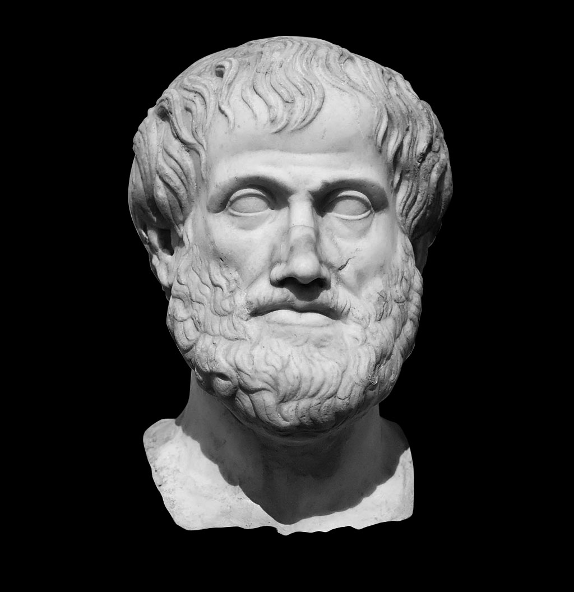

Have you ever heard the name Organon before? If your answer is yes, it was probably because of the book by Aristotle, with the same name.

Organon was the first book attempting to organize a logic system. Our company’s name pays homage to it, its great author and his contribution to the fields of logic and computer science.
We aspire to become as visionary as Organon was, working as a synergic company, that contributes meaningfully to our customers, by providing software solutions that are just as solid as they are innovative.